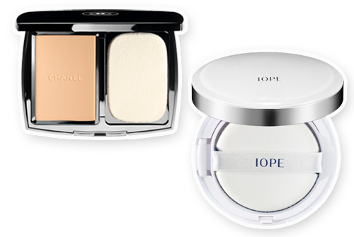
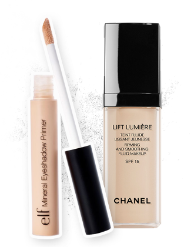
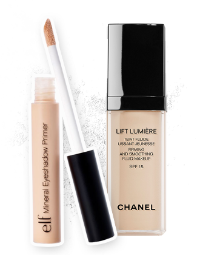
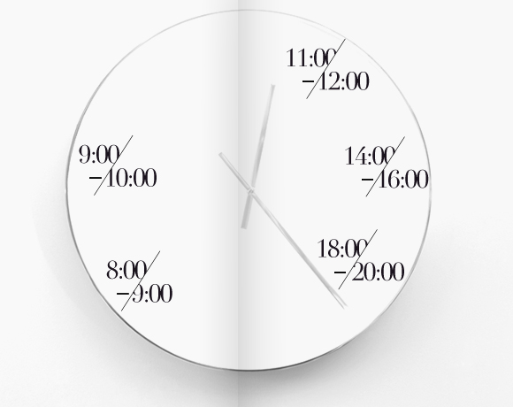

-
1
8:00-9:00
妆前乳
妆前第一步，均匀明亮肤色
上妆前使用妆前乳能令妆容更服帖。修饰肌肤色泽不均、暗沉，呈现出晶莹
透亮的自然光泽肤质。防晒配方保护肌肤，抵抗阳光紫外线的侵袭。使用方法
作为彩妆程序的第一步，打造均匀明亮的肤
色。使用前先充分摇匀，将妆前乳均匀抹在
脸部，再以指腹或刷具往外侧方向推匀。晨间
底妆修颜提亮，持久服帖
清晨醒来，做好清洁保湿功课后，使用妆前乳快速修颜
提亮，为后续底妆做好准备。臻白防晒妆前乳
SPF 30+/PA+++
-
2
9:00-10:00
粉饼
持久防脱妆的清爽体验
干粉底能修饰妆容，显得自然通透，湿润的粉扑，则可以营造出细致清爽的
效果。使用方法
以刷具沾取适量青春光彩柔润粉饼，从脸庞
中央往外侧轻刷，营造清透自然的妆效。以
柔细粉扑沾取适量青春光彩柔润粉饼轻按全
脸，提供中度的遮盖力。轻松更换粉芯的贴
心设计，是白天补妆的理想搭档。运动
妆容周末户外持久防护&运动后补妆
在运动后或户外时，持久的妆容与舒适的上妆体验能够
帮你立刻唤醒肌肤能量。IOPE气垫粉底霜
香奈儿青春光彩
柔润粉饼SPF10
（20号） -
3
11:00-12:00
粉饼
提亮肤色，迅速补妆
柔润细滑的质地能隐匿色斑，使肤色均匀一致。严选的细致粉末，可轻松均匀
地延展，呈现丝绒般的柔润妆效。使用方法
使用方法：以内附的柔细海绵粉扑沾取适量粉
饼，从脸部中央向外轻轻按压。可先以适合肤
色的「臻白防晒妆前乳」色调打底，令底妆效
果更加持久服帖。午休
补妆午休补妆
午间休息，妆容也要美美哒！趁这个时候补个妆吧，质
地轻盈的粉饼，与面部自然贴合，匀净肤质只要一抹就
即可展现。珍珠光采美白粉饼SPF25PA+++
-
4
14:00-16:00
雾粉
镁光灯般的惊艳底妆
轻盈的雾粉质地兼具粉底液般的贴合妆效，带来令人惊喜的上妆体验。水漾
触感宛如第二层肌肤，毫无厚重妆感，打造出令人惊叹的均匀、柔滑肤质。使用方法
在每天日常护肤之后使用丝绒底妆雾粉，遵
循特殊上妆流程：
1.将粉盒翻转，轻拍底部，让雾粉落至黑色
凹槽处。
2.用蘑菇刷沿凹槽轻轻蘸取少量雾粉。
3.用打圈的方式轻扫面部，由中心向四周移
动。重要
会面重要会面
以无懈可击的状态应对突发场合，工作间隙也能随时补
给美颜能量。香奈儿丝绒底妆雾粉
SPF15附迷你蘑菇刷 -
5
18:00-20:00
粉底液
紧致润泽,锁住他的视线
细致柔滑的质地轻抚脸颊的同时也轻松完成了修饰脸部轮廓的动作。自然服
贴的妆容，营造舒适轻盈感受。使用方法
以指尖或粉底刷取适量「紧颜焕采粉底
液」，从脸部中央向四周延展。魅力
晚妆魅力晚妆
与男友约会，心情总是美美的，展现光泽感和红润的气
色。打造动人的柔焦光晕，紧紧锁住他的倾慕视线。 
e.l.f矿物质眼部打底膏
香奈儿紧颜焕采粉底液
-
6
清晨底妆
早上上妆皮肤干燥无法上妆一般发生鼻部、两颊、唇周及额头。只要选择平时用的精华液，倒在用化妆水稍微沾湿的化妆棉上轻敷3分钟，就能让皮肤不再“抗拒”底妆。
运动妆容
运动时会大量出汗，水分流失迅速，所以在化妆前最好选择一款无油保湿型的乳液!确保运动时的完美妆容。
午休补妆
20秒眼妆补妆！眼睛是心灵的窗户，眼妆想要拯救先用棉签擦掉晕染的地方，然后稍稍的在眼珠正上方添点珠光眼影即可，不要太着重描绘，避免妆容过重。
工作重要会面
素颜和浓妆都不可取。很多人能意识到浓妆不可取，但对素颜同样很不礼貌不专业这件事，却不那么敏感。化一个清爽的淡妆是优秀职业女性的必备素养!
魅力晚妆
眉峰下方以及内眼角、上眼睑中央大面积扫上亮丽色；从睫毛根贴上适合晚宴妆的假睫毛，增加脸部立体感；润唇涂后在唇部中央沿唇线着重点上唇彩增添光亮度。